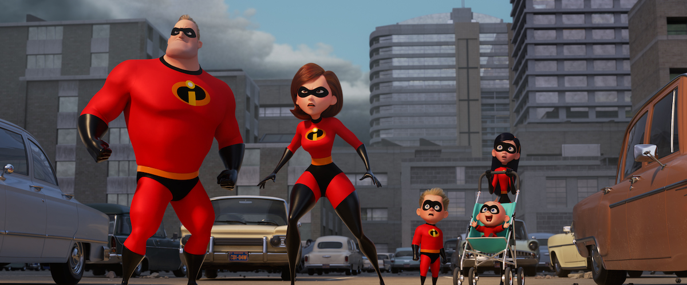

INCREDIBLES 2
Release date: 17 Jan 2020 (United States)
Directors: Adil El Arbi · Bilall FalHOME
DVD release date: 31 Mar 2020
Summary: 2hr 4min ·Crime/Thriller
Languages: English - Spanish
Costume designer: Dayna Pink
SUMMARY
For years, Pixar focused on original films, ignoring the sequel trend so prevalent in children’s entertainment. Sure, there were two sequels to “Toy Story,” but that was the exception. Now, the company regularly alternates original projects like “Inside Out” with sequels to “Cars,” “Monsters Inc.,” and “Finding Nemo.” But even as critics bemoaned the sequelitis that inflicted the company, there was always a caveat. “No more sequels ... well, maybe The Incredibles.” Brad Bird’s 2004 animated classic felt like the most sequel-ready film in the entire Pixar canon. It was an origin story, the first chapter of a universe waiting to be explored. For some reason, it took 14 years to get back to the world of “The Incredibles,” but the good news is that this world doesn’t feel remotely stale. In fact, Bird and his collaborators have wisely updated it for the late-'10s while also staying true to what we loved about the first movie. They’ve done what a great animated sequel should do—continue to develop the themes of the original while also staking new territory. This is a smart, beautiful, fun family film. In other words, exactly what we want from Pixar. Bird wastes no time getting into the meat of this story, cleverly picking up where the last film ended. Sure, it’s been 14 years in the real world, but animation allows time to be suspended. And so we see an attack by the Underminer, burrowing through the city, robbing its banks from below, and we watch the Parr family try to stop it. They do, but there’s so much damage done to the metropolis that no one is really eager to thank them. In a clever twist that is sure to inspire some thinkpieces about how it reflects on our current culture, officials would rather just let the criminals get away with it. The banks have insurance and there wouldn’t be so much destruction. And it’s that destruction that has led to superhero activity being criminalized. Read into that themes of failures of justice, anti-intellectualism, etc. as you see fit. One person who refuses to believe that superheroes should be criminalized is Winston Deavor (Bob Odenkirk), who comes to the Incredibles with a plan. Working with his sister Evelyn (Catherine Keener), he’s going to make superheroes great again. And he’s going to do so by being transparent. They’ll put a body cam on a superhero and allow the world to fall in love with heroic deeds all over again. Realizing that her brand of lifesaving is a little more cost-effective than her husband’s, the Deavors pick Elastigirl (Holly Hunter) to be the face that will make people love heroes. Once again, the concept that we only appreciate that which we can see in today’s society feels remarkably current. “Pics or it didn’t happen,” if you will. As Elastigirl gets a new outfit and a cool new ride, Bob/Mr. Incredible (Craig T. Nelson) is stuck at home, learning how being a parent takes a different kind of heroism. Dash (Huck Milner) is still his rambunctious self—and the most underwritten character in the film—but Violet (Sarah Vowell) is going through some teen girl drama, especially after the boy she likes literally doesn’t remember her any more. Most urgently, Jack-Jack has started to display powers, and if you think your baby is tough to manage because you don’t know when he’s going to throw a tantrum, imagine if you didn’t know when he was going to burst into flames. As he has in all of his work, Bird is playing with societal definitions. The Iron Giant doesn’t have to be a weapon; a rat can be a chef; Mr. Incredible can be the stay-at-home parent and Elastigirl can save the day. And the theme of surpassing even the expectations and limitations we set for ourselves weaves through the plot of “Incredibles 2” as we’re introduced to new heroes (with names like Voyd, Screech, and Reflux) and a villain named Screenslaver, who hypnotizes people through today’s greatest addiction—our attachment to our screens. Yes, “Incredibles 2” is a movie that encourages us to detach from technology and experience the world. However, it’s with a twist. Pixar films are famously beautiful when it comes to character design and art direction, but “Incredibles 2” is one of the most significant achievements in this regard. The word that I kept thinking of was fluid. I have three kids, so trust me when I say that this is not a common word when it comes to family entertainment, much of which shoehorns in messages between clunky comedy scenes with no concern for flow and pacing. “Incredibles 2” just moves beautifully, sliding from one scene to another with such grace and momentum. And the action sequences are among the best you’ll see all year. There’s a sequence with Elastigirl and a runaway train that’s gorgeously conceived and executed, and the climax is better than most Marvel action sequences. It’s a movie that’s constantly in motion, surprising you with the way it so seamlessly flows from action to comedy to family and back again, buoyed by a jazzy, fantastic score by Michael Giacchino. It’s a testament to Bird’s filmmaking ability how effortless “Incredibles 2” often feels. Nothing feels too eager-to-please, even the Jack-Jack material, which is surprisingly funny and fresh. It helps to have a fantastic voice cast to be the fuel for this finely-tuned animated machine. Nelson gets the gruff tone of Mr. Incredible, a man who loves his family but also misses the days when he was the coolest superhero in the world, and the supporting cast is uniformly stellar. But the movie is really stolen by Hunter, who can convey more with a single line reading than other actresses can with an entire monologue. Parents should be warned that “Incredibles 2” is long—almost two hours—just like the first one, and there is an unavoidable sense that some of the wonder of the concept has been diluted since the first film. Having said that, “Incredibles 2” understands something that most family sequels, even the Pixar ones, fail to comprehend—we don’t just want to repeat something we loved before. We want to love it all over again. You will with “Incredibles 2.”